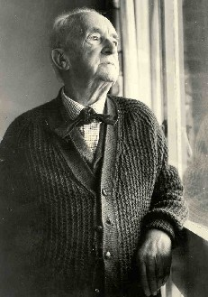

Tuesday, November the 22nd, 2011
back to: title, date or indexes
… as I was just now, in The Wooden Lake, reminds me to bring to your attention a weekend postage at The Dabbler, where Mahlerman tells us about Havergal Brian's Gothic Symphony, which
calls for up to one thousand performers, including nine choirs, four offstage brass bands, and the normal orchestra size doubled-up to about 150 players. A vast percussion section includes chains, a thunder machine and a bird scare.
That Brian was one of the great British eccentrics has never been in doubt
